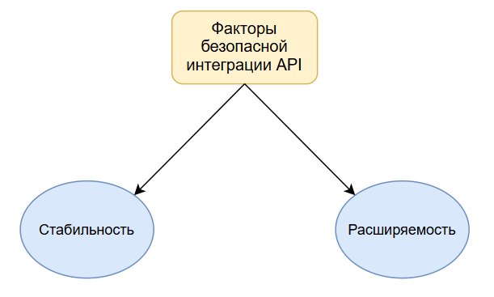
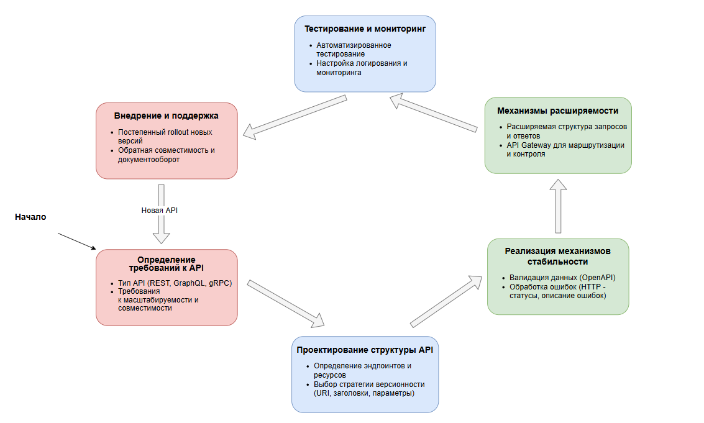

Технология интеграции API: обеспечение стабильности и расширяемости
Авторы: А.Н. Ширко, А.В. Харченко
Учебное заведение: Кубанский государственный университет
Ключевые слова: API, стабильность и расширяемость, API Gateway, REST API, URL, URI
Аннотация
В работе исследуются проблемы при интеграции различных API в бизнесе, а также факторы безопасной интеграции. Рассматриваются принципы построения стабильного и расширяемого интерфейса взаимодействия, а также методология проектирования и внедрения API.
Процесс разработки программного обеспечения неразрывно связан с расширением изначальной функциональности планируемой системы. В данном процессе у бизнеса может возникнуть потребность получения информации не присущей логической модели развития разрабатываемого ПО, т.е. возникает необходимость обращения к ресурсам извне: обновить данные модели, внедрить в существующую логику новую стороннюю функцию, обмен данными с внешним сервисом. В таких ситуациях бизнес находит решение проблемы в интеграции с API.
API (Application Programming Interface) – это набор инструментов и команд, который позволяет двум независимым компонентам программы обмениваться данными. Другими словами, API является инструментом взаимодействия в клиент-серверной архитектуре приложения, где компонента, использующая API, является клиентом, а компонента, обрабатывающая запросы – сервером. На данный момент сложно себе представить веб-сервис, который так или иначе не использует API, что говорит об актуальности вопроса их безопасной интеграции в разрабатываемом ПО.
Факторы безопасной интеграции API
Безопасная интеграция API напрямую связана с двумя факторами:
- Стабильность при интеграции требует бережного подхода к поддержке и обновлению старых версий, используемого API, т.к. в случае отсутствия обратной совместимости, «мост» между компонентами приложения может начать давать сбои. Отсюда следует, что всякое обновление API должно придерживаться логической стратегии её развития как клиентской части, так и серверной.
- Расширяемость подразумевает под собой цельный архитектурный подход к разработке интерфейса взаимодействия, что позволит избежать проблем в случае необходимости добавления дополнительной функции. Это особенно важно в моменты, когда бизнес не может прогнозировать какие возможности по интеграции ему будут необходимы в будущем. Такой подход поможет снизить стоимость доработки.

Для обеспечения устойчивости API применяются два принципа:
- Сохранение идемпотентности – предполагает под собой свойство API, которое гарантирует, что каждый следующий вызов функции не изменит состояния системы в целом. Данный принцип гарантирует бесперебойную работу конкретной функции интерфейса на всяком этапе работы приложения и снижает риск некорректных данных при ошибках сети.
- Обратная совместимость – гарантирует, что новые версии функций интерфейса взаимодействия не нарушает работу старой. Данный подход предполагает поддержку клиентов, для работы которых нет необходимости в новых особенностях API, т.е. предполагает развитие запроса-функции только вперед, без удаления старой реализации.
Придерживаясь данных принципов, а также стандарта OpenAPI (Swagger) – методология описания REST API запросов, при которой появляется возможность автоматической генерации автономной документации, быстрого создания и проверки при помощи инструмента Swagger, что позволит обеспечить стабильность и расширяемость задуманной API.
Подходы к поддержанию принципов стабильности и расширяемости API
Изучим подходы к поддержанию вышеперечисленных принципов с учетом возможных технических реализаций. В данной статье рассматриваются три основных подхода:
-
Версионирование API – обеспечивает принцип идемпотентности путем явного указания версии в запросе. Способы поддержки версионности:
- Версия в URI-запросе – версия определяется видом запроса, но это может приводить к дублированию кода.
- Версия в заголовке (Header) запроса – версия объявляется в HTTP-заголовке, что позволяет избежать дублирования кода.
- Версия в параметрах запроса – передается как дополнительный параметр запроса.
-
Обработка ошибок и логирование – обеспечивает стабильность работы API. Рекомендуется:
- Использовать стандартизированные HTTP-коды ответов: 200, 201, 400, 401, 500.
- Для каждой ошибки формировать развернутый JSON-ответ с описанием проблемы.
- Вести логирование на нескольких уровнях: Info, Warning, Debug.
-
Архитектура и балансировка нагрузки – обеспечивает стабильную работу высоконагруженной системы:
- Распределение нагрузки между серверами, обрабатывающими запросы.
- Использование балансировщиков нагрузки, например Nginx, и API Gateway для единой точки входа.
- Установка ограничения на количество запросов для предотвращения перегрузки и спам-атак.

Предложенная схема проектирования позволит избежать многих ошибок на ранней стадии разработки приложения, когда ещё не видны все особенности системы. Также данный шаблон выделяет критические моменты, на которые бизнес сразу может учесть и тем самым сэкономить потенциальные производственные и финансовые расходы.
Библиографический список
- HTTP API OpenAPI [Электронный ресурс] (дата обращения: 01.03.2025)
- Постановка проблемы обратной совместимости [Электронный ресурс] (дата обращения: 23.03.2025)